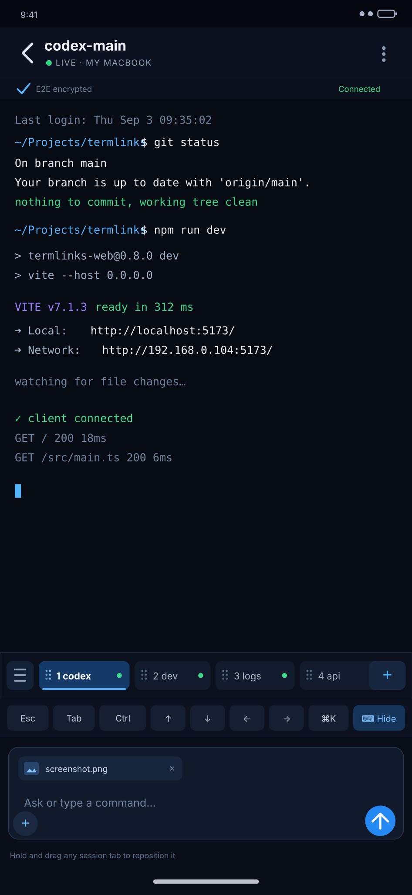
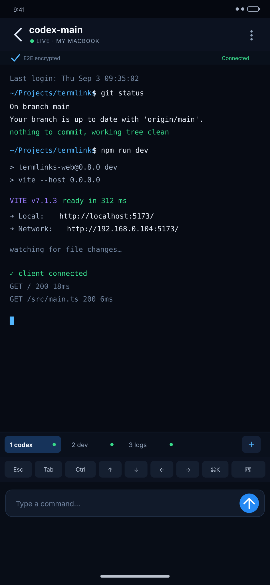
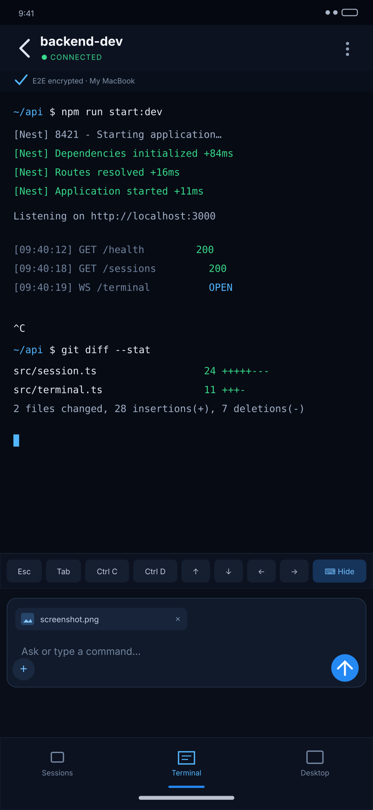
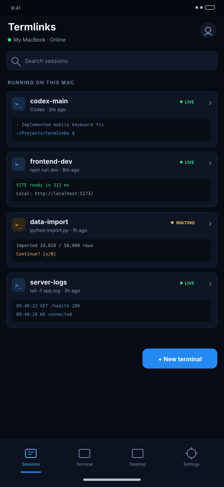

Selected: hybrid terminal + sliding tabs New
Attachment-enabled composer from the hybrid design, combined with horizontally sliding terminal tabs. Tap to switch; hold and drag to reorder.

The selected combined direction plus the original three concepts. Pinch to zoom, or tap an image and open it in a new tab for full resolution.
Attachment-enabled composer from the hybrid design, combined with horizontally sliding terminal tabs. Tap to switch; hold and drag to reorder.

Closest to a focused mobile SSH client. The terminal receives almost all the screen space.

A terminal-first screen with the image/file workflow and a restrained command composer.

A clean home screen for returning to Codex, servers, scripts, and other long-running sessions.
